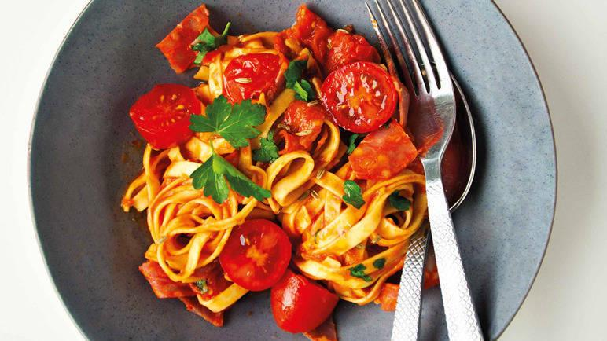

Chorizo Linguine

Description
Ingredients
- 1 large handful fresh egg linguine or tagliatelle
- ½ small garlic clove, grated
- ½ tsp fennel seeds
- 1 handful cherry tomatoes
- 3 tbsp tomato passata
- 1 tsp olive oil, plus a little extra to garnish
- 4 coriander leaves
- 4-5 slices chorizo
Steps
- First, boil the kettle. Take a large handful of the pasta and place it in a bowl. Pour over the boiling water, add a pinch of salt and pepper and cover the bowl with a plate. Set aside. It should take around two to three minutes to cook to al dente.
- Next, add the garlic and fennel seeds to a separate, microwaveable bowl. Crush the seeds with the back of a spoon. Chop the cherry tomatoes in half and add to the bowl along with the passata, olive oil and a couple of the coriander leaves. Stir everything together.
- Now slice the chorizo. If you’re using antipasto slices, cut each slice lengthways into strips. If you’re using chorizo sausage, slice it finely. Add these to the bowl of passata with a pinch of salt and pepper, cover with a plate or clingfilm and microwave on high for 90 seconds.
- Once cooked, take the sauce out of the microwave and give it a good stir. It should be hot throughout. Drain the water from the pasta and drizzle over some olive oil and a pinch of salt and pepper. Toss together. Finally, pour the sauce over the pasta and garnish with the remaining coriander leaves.
Home